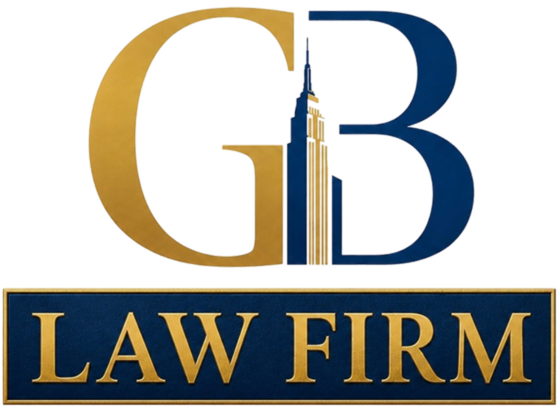

The Brooklyn–Queens Expressway
The BQE carries through traffic, commercial traffic and bridge approaches on a structure long past its design life. Sustained congestion produces rear-end impacts and lane-change collisions in constant succession.
Type to jump to a section.

GB Law Firm
(516) 444-1000Brooklyn — the densest ground the firm covers, and the one with the most parties to an ordinary crash
Kings County is Brooklyn, and it is the most densely populated county in the state. Everything that makes a claim complicated is concentrated here: commercial traffic, buses, for-hire vehicles, cyclists, and pedestrians in numbers that make every junction a negotiation.
The road network carries a volume it was not built for. The Brooklyn–Queens Expressway, the Belt Parkway and the avenues running out to the water all operate near capacity for most of the day, and the crashes are the ordinary consequence.
Density also means a Brooklyn file usually has more parties to it than a Long Island one — more vehicles, more insurers, and more frequently a commercial defendant or a public authority with its own much shorter deadline.
A Brooklyn crash usually has more than two parties and more than one insurer. Establishing who they all are is the first work, and it decides everything after it.
The BQE carries through traffic, commercial traffic and bridge approaches on a structure long past its design life. Sustained congestion produces rear-end impacts and lane-change collisions in constant succession.
Ringing the borough's southern edge, with short merges, tight curves and heavy weekend volume. Merge and single-vehicle collisions concentrate here.
Two wide, fast avenues cutting across the grid, both heavily commercial and both crossed constantly on foot. Turning collisions and pedestrian strikes dominate.
Long straight runs with frequent crossings, protected cycle infrastructure alongside moving traffic, and the ordinary intersection crash in very large numbers.
Brooklyn is neighbourhoods, and any list of them is a selection. These are the ones we are asked about most.
The Belt Parkway, the approach to the Verrazzano, and a dense commercial strip along Fifth and Third Avenues. See our Bay Ridge page.
Where the county's Supreme Court sits, and where the bridge approaches, the BQE and the borough's densest bus network all converge.
Flatbush Avenue running the length of it, wide and fast, with constant pedestrian crossing and heavy bus traffic.
The BQE, the bridge approach, and a cyclist population as large as anywhere in the city.
Third Avenue under the expressway, heavy commercial and truck traffic serving the waterfront, and poor sight lines beneath the structure.
The Belt Parkway, Ocean Parkway's southern end, and a seasonal population that changes the traffic entirely each summer.
Anywhere in Brooklyn, the first conversation is free — and if a bus or a city vehicle was involved, have it soon. Call (516) 444-1000.
The steps are the same as anywhere in New York. What changes here is how many parties there usually are, and how fast some of the deadlines run.
A city bus, a Transit Authority vehicle, a sanitation truck, or the condition of the road itself. Claims against a public authority start with a notice of claim on a deadline measured in weeks, not with a lawsuit on a three-year one.
Brooklyn crashes frequently involve more than two. Each additional vehicle is another insurer and another account of what happened, and the ones nobody recorded at the scene are rarely identified afterwards.
Buses, commercial fleets and for-hire vehicles record continuously and overwrite quickly, and so does almost every business on a Brooklyn commercial street.
With your own insurer, regardless of fault. Pedestrians and cyclists should ask which coverage responds rather than assuming none does.
Civil claims in Kings County are heard in Downtown Brooklyn.
Call GB Law Firm at (516) 444-1000 for a free, confidential consultation. There is no obligation and no fee unless we win.
The firm is based in Copiague and works across Long Island and the western boroughs. Kings County is inside the area the firm covers directly, not referred elsewhere.
Our attorneys are admitted to practice in New York state and federal courts. Every file is prepared as though it is going to a jury, because that preparation is what moves a carrier's offer — and you will be told early what your claim actually turns on, including when the honest answer is not the one you were hoping for.
Free case review, and no fee unless we win. Call (516) 444-1000.
Substantially, and this is the thing most likely to cost someone their case. A claim against a public authority in New York begins with a notice of claim on a deadline measured in weeks, and the period for bringing the case itself is far shorter than the ordinary three years. Establish whether any public body is involved in the first days.
Each carrier investigates separately and each has an interest in the blame landing elsewhere. It is resolved with the physical evidence — damage patterns, final positions, and the vehicles' own recorded data — rather than by whoever argues hardest. Identifying every vehicle at the scene matters enormously, because the ones not recorded then are usually not found later.
Yes. Opening a door into the path of traffic without looking is a violation in New York, and the injuries from it are frequently serious. The coverage question is the one to ask early, since a cyclist has no policy of their own in the way a driver does.
Often, and that is usually to your advantage — a commercial policy is generally far larger than a private one. Whether the company is responsible turns on the driver's relationship to it and what they were doing at the time, which is established from records rather than from what anyone says at the scene.
Nothing. The consultation is free and the case is handled on a contingency basis — no fee unless we win. The arrangement is set out in writing before anything begins.